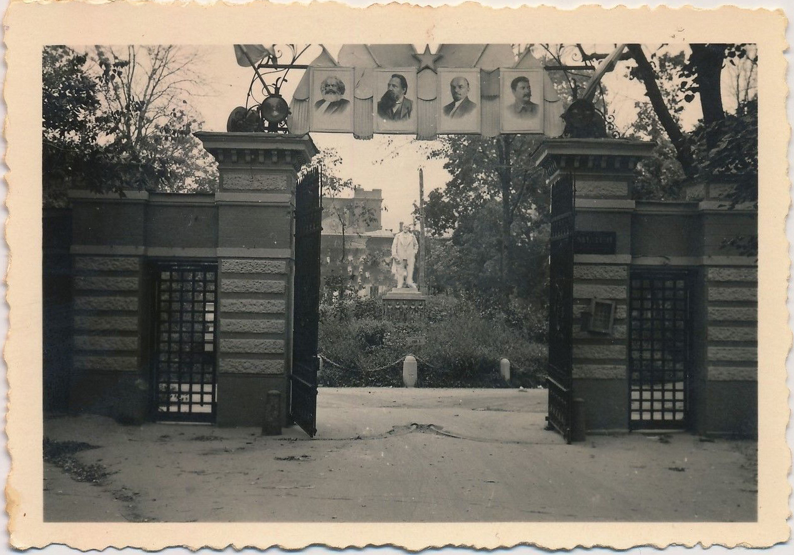
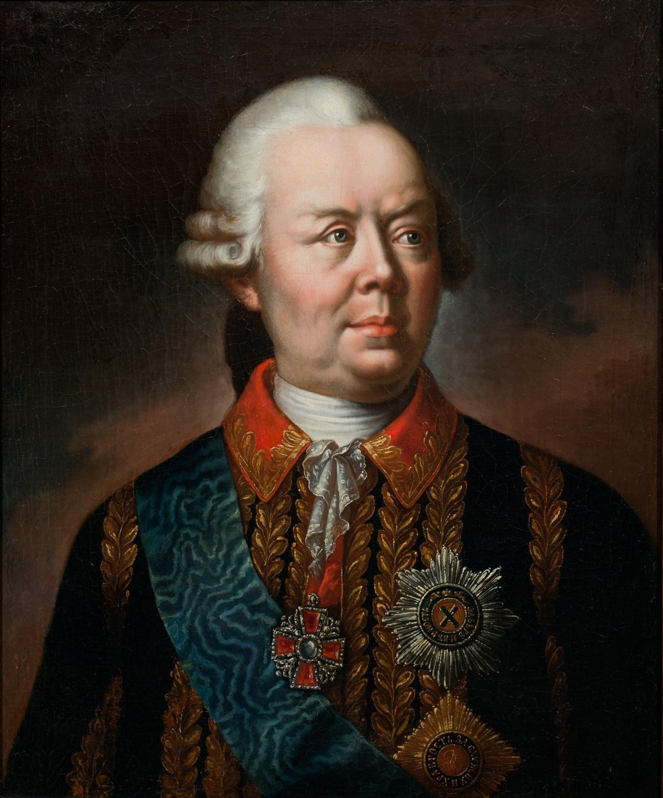
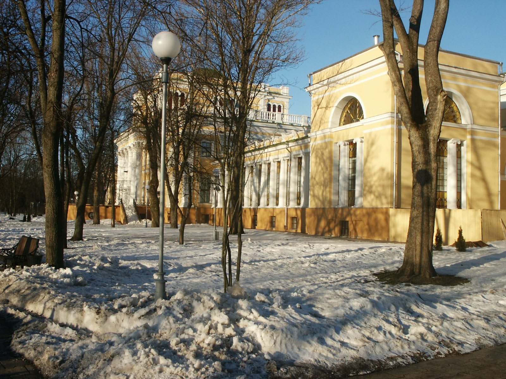
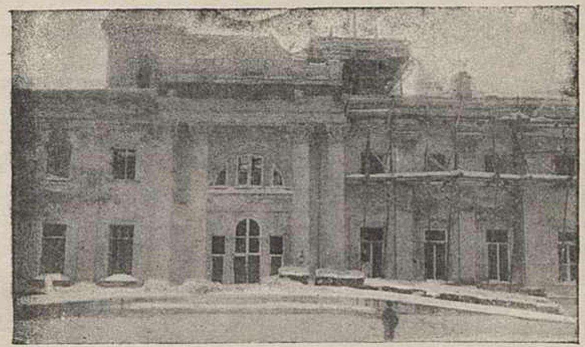
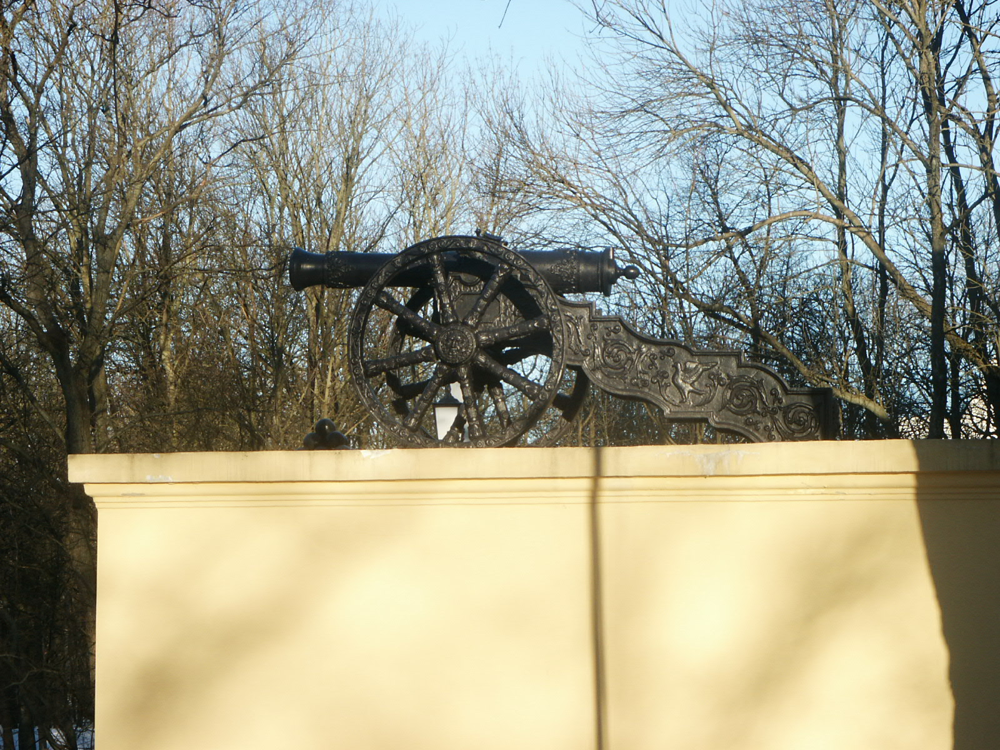

Начало строительства. Екатерина II жалует Гомель Румянцеву.
ИСТОРИЯ ОДНОГО ДВОРЦА · ГОМЕЛЬ · 1777—2026
Дворец, переживший империи.
Дворец Румянцевых-Паскевичей — от Екатерины II до наших дней
Прокрути, чтобы начать путешествие во времени

ГЛАВА I · 1777—1796
Подарок императрицы
В 1777 году императрица Екатерина II пожаловала гомельские земли графу Петру Румянцеву-Задунайскому — прославленному полководцу, победителю турок при Кагуле и Ларге.
В благодарность за верную службу императрица велела построить для фельдмаршала дворец, достойный его заслуг. Строительство велось с 1777 по 1796 год под руководством архитекторов итальянской школы.
Двухэтажный дворец в стиле классицизма с бельведером, колоннадой и роскошными интерьерами стал жемчужиной Гомеля. Архитектурный замысел приписывается итальянскому мастеру Antonio Rinaldi, который работал над проектом совместно с русскими зодчими.
Главный фасад дворца, обращённый к Сожу, украшала колоннада из десяти ионических колонн высотой 12 метров. Парадные залы с лепниной, позолотой и живописными плафонами поражали воображение современников.
«Дом сей построен на века и послужит украшением города и памятником монаршей милости.»
— из указа Екатерины II, 1777 г.

ГЛАВА II · 1777—1796
Полководец, получивший дворец
Пётр Румянцев-Задунайский (1725—1796)
Граф Пётр Румянцев — один из величайших полководцев Российской империи. Победитель в русско-турецких войнах, генерал-фельдмаршал, кавалер ордена Святого Георгия I степени.
Получив Гомель в дар от Екатерины II, он не успел насладиться дворцом — скончался в 1796 году, вскоре после завершения строительства.
Его сын — Николай Румянцев, известный государственный деятель и покровитель наук, основал знаменитое Румянцевское собрание — коллекцию рукописей и древностей, ставшую основой Российского государственного исторического музея.
«Верность и храбрость — основы величия. Гомель станет символом обеих.»
— из письма Петра Румянцева, 1785 г.
• 1770 — победа при Кагуле
• 1775 — титул графа Задунайского
• 1777 — пожалован Гомель
• 1796 — скончался
ГЛАВА III · 1834
Эпоха Паскевича
После смерти Румянцева дворец сменил нескольких владельцев. В 1834 году его приобрёл фельдмаршал Иван Паскевич-Эриванский — герой Кавказской войны, наместник Царства Польского.
При Паскевиче дворец пережил вторую молодость. Были добавлены боковые флигели, разбит великолепный парк, создан зимний сад. Интерьеры украсили произведения искусства, собранные фельдмаршалом по всей Европе.
Паскевич привёз из походов коллекцию оружия, гобелены, картины европейских мастеров. Библиотека дворца насчитывала более 10 000 томов.
Гомельский дворец стал одним из самых роскошных поместий Российской империи. Здесь бывали А.С. Пушкин, Н.В. Гоголь, М.И. Глинка.
«Гомель — жемчужина моих владений, место, где я нахожу покой после военных трудов.»
— Иван Паскевич, 1845 г.
ИНТЕРАКТИВ · ПЕРЕТАЩИ ПОЛЗУНОК
Один дворец. Две эпохи.
Потяни за золотую ручку, чтобы увидеть, как менялся Дворец Румянцевых-Паскевичей с конца XIX века до наших дней.
ХРОНОЛОГИЯ
Вехи истории
Завершение главного корпуса. Начало строительства парка.
Завершение строительства. Смерть Румянцева.
Дворец покупает Иван Паскевич. Новая эпоха расцвета.
После смерти Паскевича дворец переходит к его потомкам.
Национализация. Открытие первого музея в Гомеле.
Присвоение статуса памятника архитектуры республиканского значения.
Великая Отечественная война. Дворец сильно разрушен.
Восстановление и реставрация дворца.
Начало масштабной реставрации интерьеров.
Масштабная реконструкция. Создание дворцово-паркового ансамбля.
Завершение реставрации фасадов. Открытие новых экспозиций.
Один из главных музеев Беларуси. 249-летие дворца.
СЛОИ ВРЕМЕНИ
Один дворец. Пять эпох.
Проведи пальцем или кликни — увидишь, как менялся дворец на протяжении 250 лет.




Покрути 3D-модель оружия Паскевича
СВИДЕТЕЛЬСТВА
Голоса, которые помнят этот дворец
«Дворец в Гомеле есть один из великолепнейших в целой России. Парк и виды чудесные.»
«Мы вошли в зал, где портреты Румянцева и Паскевича смотрели на нас с величием минувшей эпохи.»
«Великий князь Николай Павлович, будущий император Николай I, посетил Гомель в 1835 году и был восхищён дворцом Паскевича.»
«После освобождения Гомеля мы увидели дворец разрушенным. Казалось, его невозможно восстановить. Но мы справились.»
«Когда я впервые увидела парадную лестницу с лепниной и колоннами, я почувствовала себя перенесённой в другую эпоху.»
БИБЛИОТЕКА
10 000 томов в сердце дворца
При Паскевиче была создана одна из крупнейших частных библиотек Российской империи. Здесь хранились редчайшие рукописи, инкунабулы и первопечатные книги.
10 000+
томов
200+
рукописей
50+
языков
КОЛЛЕКЦИЯ
Сокровища фельдмаршала
Оружейная
Коллекция оружия из походов: сабли, шпаги, кинжалы. Восточное и европейское оружие XVII—XIX веков.
Живопись
Картины европейских мастеров: портреты, пейзажи, батальные сцены. Гобелены из Гобеленовой мануфактуры.
Декоративно-прикладное
Фарфор, серебро, хрусталь. Предметы из дворцов Вены, Берлина, Парижа.
Рукописи
Старинные документы, письма, карты. Архив Румянцевых-Паскевичей — свидетельство эпохи.
ПАРК
Зелёное сердце ансамбля
Парк площадью более 25 гектаров — один из старейших пейзажных парков Беларуси. Здесь редкие деревья, аллеи, пруды и скульптуры.
25 га
150+ видов деревьев
3 пруда
Аллея роз
1780-е
Закладка регулярного парка Румянцевым
1830-е
Паскевич создаёт пейзажный парк в английском стиле
1840-е
Зимний сад и оранжерея с тропическими растениями
Сегодня
Парк-памятник садово-паркового искусства
СЕГОДНЯ
Дворец живёт. И ждёт тебя.
Сегодня Дворец Румянцевых-Паскевичей — это Гомельский дворцово-парковый ансамбль, один из главных музеев Беларуси. Здесь расположены:
- Музей истории Гомеля (более 12 000 экспонатов)
- Художественная галерея с коллекцией XVIII—XXI веков
- Парк XVIII века площадью 30 гектаров
- Петропавловский собор (1809—1819)
- Ансамбль карьер и мостков
- Летний театр и открытые площадки
«Каждый камень этого дворца хранит историю величия, войны и возрождения. Два с половиной века — лишь мгновение в жизни камня. Но для людей это целая вечность.»
Дворец Румянцевых-Паскевичей · Гомель · 2026
Историческая справка подготовлена на основе материалов:• Гомельский областной краеведческий музей
• Национальный архив Республики Беларусь
• «Дворцово-парковый ансамбль в Гомеле» (монография, 2010)
• Государственный архив Гомельской области